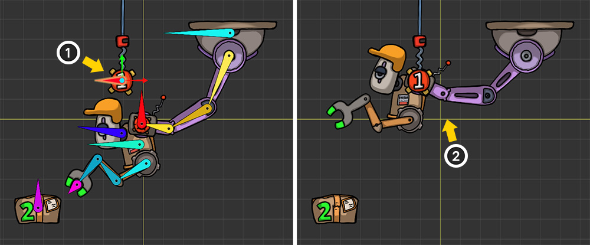

AnyPortrait > Manual > Complexly configured IK Controllers
Complexly configured IK Controllers
1.5.0
In "AnyPortrait v1.5.0", IK Controllers have been improved to be more flexible.
This allows for more complexly configured IK Controllers and IK Chains to work naturally.
When IK Controllers are complexly configured, it usually means "IK Controller is dependent on other IK Controllers".
This page introduces some situations where IK Controllers become dependent.
For detailed information about IK Controller, please refer to the following manuals.
- IK Settings
- IK Controller
Hierarchically linked IK Chains

Let's check the case where two IK Chains with IK Controllers are hierarchically connected.
In this case, the IK controller of the child IK Chain is dependent on the parent IK Chain.
In other words, the IK Controllers of the IK Chains should be calculated in the order of "Parent > Child".
This is an example of two IK Chains with IK Controllers connected as a parent-child relationship.
The robot is connected to the ceiling and grabs and moves a box.
(1) The first IK Chain. The robot's body is moved by a purple mechanical arm, which is connected to a red target with a "1" written on it hanging from the ceiling.
(2) The second IK Chain. The arm attached to the robot's body grabs a payload with a "2" written on it.

These are the main bones of this robot.
There are "Bone Parent Arm" bones corresponding to the parent IK Chain and "Bone Child Arm" bones corresponding to the child IK Chain.
These chains are connected to each other, and there is a "Bone Body" between them.
You can also see "Bone Target 1" and "Bone Target 2" which are the targets of each IK Controller.

First, let's set up the "Parent IK Chain and IK Controller".
(1) Select the "Bone Parent Arm 1" of the purple mechanical arm and set up the IK Chain up to the "Bone Parent Arm End".
(2) Select the last bone, "Bone Parent Arm End", of the purple mechanical arm.
(3) Set the IK Controller type to Position, set "Bone Target 1" as Effector Bone, and set "Default FK/IK Weight" to 1.

(1) Create an animation to move the red target ("Bone Target 1").
(2) The purple mechanical arm is attached to the target by the IK Controller.
The robot's body attached to the mechanical arm is also moved.
Next, let's set up the "Child IK Chain" corresponding to the robot's arm.
(1) Select the first bone, "Bone Child Arm 1", of the robot's arm and set up the IK Chain up to the robot's hand ("Bone Child Arm End").
(2) Select the robot's hand ("Bone Child Arm End").
(3) Set the IK Controller type to Position, set the box ("Bone Target 2") as Effector Bone, and set "Default FK/IK Weight" to 1.
(1) Animate the box ("Bone Target 2") to move.
(2) The robot arm grabs the box with the IK Controller.
At the same time, you can see the IK Controller of the purple mechanical arm moving.
You can create an animation like the above using two IK Controllers.
If the IK Chains with IK Controllers are connected to each other in a "Parent-Child" relationship, you can see that it works well without any special settings like the above.
Multiple Effectors in an IK Chain
You can set "IK Controller" for each of two or more bones belonging to an IK Chain.
That is, there will be multiple Effector Bones in a single IK Chain.
In this case, the IK Controller located at the end will be dependent on the result of the parent IK Controller.

Here is a claw arm that is sticking out of the ground.
This claw arm is trying to catch a green ball with a "2" written on it.
Let's set up 2 IK Controllers on one IK Chain.
(1) This is a long arm with a claw. It forms 1 IK Chain.
(2) The claw will try to grab the object with "2" written on it.
(3) There is a small socket in the middle of the arm. This socket will try to get closer to the object with "1" written on it.

Let's set up IK Chain.
(1) Select the first bone of the arm, "Bone Arm 1".
(2) Change to "IK Head" type.
(3) Press the "Change IK Target" button.
(4) Select the last bone of this claw arm ("Bone Arm End") to complete the IK Chain.
This example is different from the "Hierarchically Linked IK Chains" example above.
This is because, unlike the above example where there were two IK Chains linked, in this example all the bones that make up the claw arm form a single IK Chain.

Now let's set up the IK Controller.
First, let's make the claw arm grab the target object.
(1) Select the last bone in the IK Chain ("Bone Arm End").
(2) Set up an IK Controller of type Position, set Effector Bone to "Bone Target 2", and set Default FK/IK Weight to 1.
Let's also assign an IK Controller to the middle bone of the IK Chain.
(1) Select the middle bone of the IK Chain.
(2) Set an IK Controller of the Position type in the same way. This time, set "Bone Target 1" as the target. Set Default FK/IK Weight to 1.

If you create an animation by moving the two bones that are the targets of the IK Controller, the claw arm moves as shown above.
(1) The claw at the end of the IK Chain grabs the target object.
(2) The bone in the middle of the IK Chain also moves toward the target, but the range of movement is limited to the range in which the claw grabs the object.

Above is the completed animation result.
If you set the IK Controller in the middle of the IK Chain, you can see that it moves towards the Effector Bone with restrictions.
Using this technique, it is possible to control the shape of the IK Chain by adding the Effector Bone in the middle and moving it with the IK Controller.
Effector belonging to another IK Chain
If Effector Bone belongs to another IK chain, the IK Controller will operate dependently.
This is because the calculation of the IK Chain with Effector Bone must be completed before this IK Controller can be calculated normally.
However, if it is not configured as a parent-child with the other IK Chain that Effector Bone belongs to, there is a problem.
The dependent IK Controller need to be processed later, and if they are not parent-child IK Chains, the processing order is unknown.
So in this case, you need to directly specify the processing order of the IK Controller.
At this time, you can solve this problem by using the property called "Depth".
Let's take advantage that IK Controllers with larger values of Depth are computed later.
Processing order of IK Controllers
The processing order of IK Controllers is determined by the following rules:
1. If the Depth setting is lower, it is processed first. If they have the same Depth, it is determined by the next rules:
2. Parent bones are processed before child bones.
3. The processing order of bones that do not have a direct parent-child relationship is determined arbitrarily and cannot be modified by the user.
4. The hierarchical depth of the bone does not determine the processing order.

It's a robot with two mechanical arms.
(1) The blue machine arm points to the gem. This machine arm is not dependent on any other IK Controller.
(2) The green machine arm is connected to the blue machine arm. Therefore, the green machine arm must be calculated later than the blue machine arm.
As you can see in the example above, when the IK Controllers of different IK Chains interact, the dependent IK Chains should be processed later.
The larger the Depth, the later the IK Controllers are processed, so the Depth of the dependent green machine arm should have a larger value.

These are the main bones of this example.
"Bone Main Arm" and "Bone Sub Arm" are connected to each other from "Bone Root".

The bone we need to check here is the "Bone Sub Target".
The "Bone Sub Target" is a child bone of the "Bone Main Arm 3" that makes up the blue arm.
And this bone is also the Effector Bone that will be connected to the green machine arm.
That means that this bone is the target of another IK Controller in the IK Chain.
With this in mind, let's set up the IK Controllers.
First, set up the IK Controller for the blue machine arm.
(1) Select "Bone Main Arm 1" and set up the IK Chain for the blue machine arm.
(2) Select the last bone in the IK chain, "Bone Main Arm End".
(3) Select the IK Controller of type Position and set its target to the gem ("Bone Gem"). Also set the default weight to 1.
(4) Set the value of the IK Depth property to the default value of "0".
Next, we continue to set up the green machine arm.
(1) Select "Bone Sub Arm 1" and set up the IK Chain for the green machine arm.
(2) Select the last bone in the IK chain, "Bone Sub Arm End".
(3) Select the IK Controller of type Position and set its target to the "Bone Sub Target" belonging to the blue machine arm. Set the weight to 1.
(4) Change the value of the IK Depth property to "1".
(1) Create an animation of the jewel moving.
(2) The blue mechanical arm takes a pose to grab the jewel with the IK controller.
(3) At the same time, the green arm is connected to the blue arm and moves together.

You can see an animation of two mechanical arms working together according to the movement of the gem.
If the processing order is set incorrectly
Let's see what it would look like if the order of processing of the IK Controllers was wrong.
(1) Let's select the bone of the IK Controller that should be calculated later and change the value of IK Depth to "-1" which is lower than 0.
With this setting, the IK Controller that should be operated later will be processed first.

You can see that the processing order is wrong, so the green machine arm is not properly connected to the blue machine arm.
(Where the green arm is pointing is where the blue machine arm was before the IK Controller was applied.)
You can also see the results of the above examples in the following video.